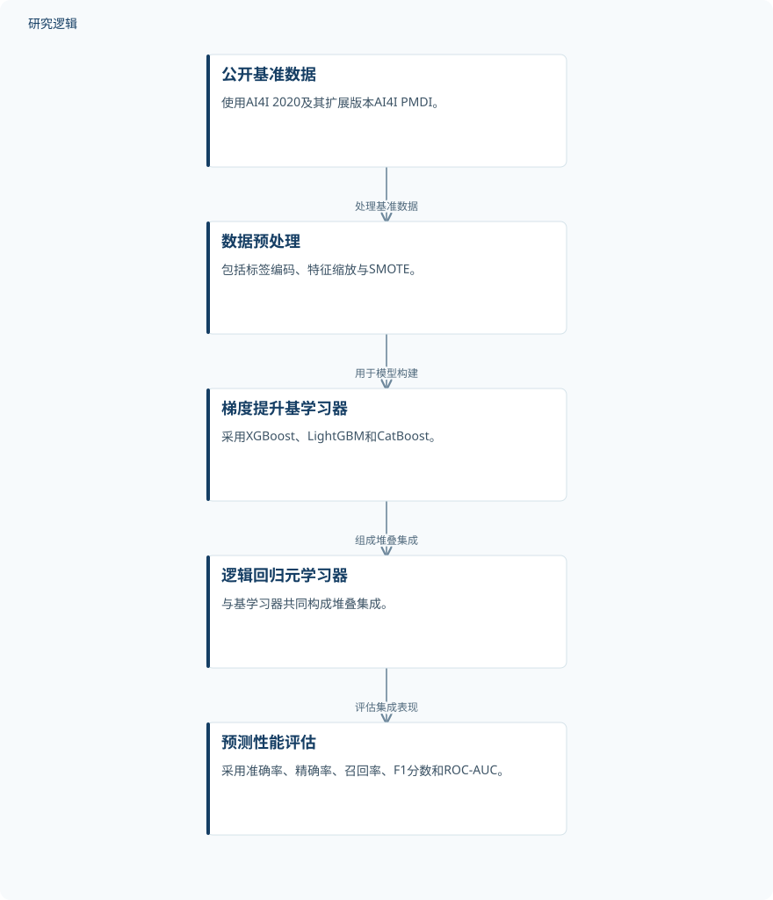

摘要解读
面向工业物联网机器故障预测的AI4I数据集堆叠集成预测性维护框架
Stacking ensemble-based predictive maintenance framework on AI4I datasets in IIoT systems for forecasting machine failures
解读更新 2026-11-10 10:56 · 依据公开摘要整理，未核验全文细节
设备故障能否提前预测，关系到工业系统的运行可靠性与停机损失。这项研究把多种梯度提升模型组合为堆叠集成，在公开预测性维护数据集上获得较高准确率；阅读重点是其组合方法，以及基准结果与真实工业应用之间的距离。
文章目录
提前预测故障，目标不止是分类准确
研究面向工业系统的预测性维护，希望在设备故障发生前作出预测，以提高运行可靠性、减少停机，并推动理论研究向实际工业应用衔接。需要区分的是，这些属于研究目标，不能直接等同于已经证实的现场收益。
梯度提升模型组合，逻辑回归负责集成
研究使用AI4I 2020及其扩展版本AI4I Predictive Maintenance Dataset with Irregularities（PMDI）进行验证。摘要列出的预处理包括标签编码、特征缩放，以及用于应对类别不平衡的合成少数类过采样技术（SMOTE），但没有交代这些操作与训练、测试划分的具体关系。
模型以XGBoost、LightGBM和CatBoost作为基学习器，以逻辑回归作为元学习器，构成堆叠集成。评估指标包括准确率、精确率、召回率、F1分数和ROC-AUC，旨在从不同角度考察故障预测表现。
依据摘要整理的堆叠集成研究过程


仅概括摘要明确描述的数据、预处理、模型组合与评估关系，不代表论文原图，也不规定数据划分和预处理的实际执行顺序。
下载 SVG图示关系说明
实线表示相邻阶段的信息流，虚线表示跨阶段联系或反馈。
公开基准数据 → 数据预处理：处理基准数据；数据预处理 → 梯度提升基学习器：用于模型构建；梯度提升基学习器 → 逻辑回归元学习器：组成堆叠集成；逻辑回归元学习器 → 预测性能评估：评估集成表现
基准准确率较高，优于单独基模型
摘要报告，堆叠集成持续优于单独使用的基模型，在AI4I 2020上的准确率为99.16%，在AI4I PMDI上为99.60%，ROC-AUC接近0.99。这支持了该组合方案在所用基准上的预测表现；摘要未给出各单模型的具体成绩，也未列出精确率、召回率和F1分数的结果，因此无法据此判断各项指标的改善幅度。
公开基准成绩尚不能替代现场验证
作者明确将研究范围限定于公开基准数据集和人工构造的工业场景。摘要未报告样本规模、数据划分、重复验证方式或统计不确定性，也不足以判断比较模型的调参是否具有可比性。这些信息需要进一步查阅，不能将“摘要未报告”理解为论文没有开展。
实时部署被作者列为未来扩展方向。因此，现有摘要不能证明模型已经在现场降低停机时间，也无法判断面对实际数据质量变化时的稳定性、部署成本与维护收益。较高分类准确率与工业运行价值之间，仍需明确验证边界。
阅读启发：追问高分如何转化为维护价值
阅读启发：进一步阅读时，可优先核对SMOTE与数据划分的先后关系、少数类故障的召回表现，以及集成相对各基模型的增益。作者提到的成本敏感评价和SHAP、LIME解释工具，也提示了值得关注的问题：预测错误的代价如何体现，模型判断又能否为维护人员理解；这些仍是扩展方向，而非已验证成果。
以上为本站阅读启发与建议，不是论文已验证的结论。